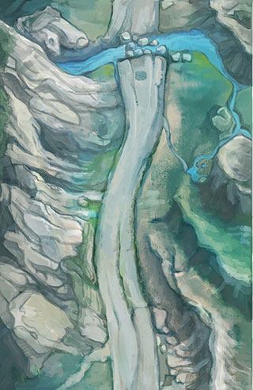
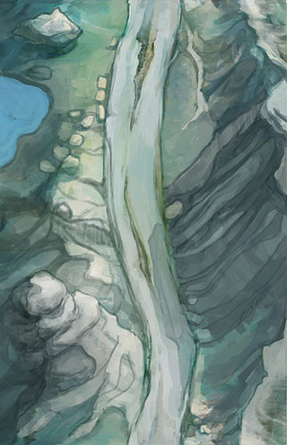

<!DOCTYPE html>
<html>
<head>
  <meta http-equiv="content-type" content="text/html; charset=UTF-8">
  <title> t4 </title>
  <meta name="apple-mobile-web-app-status-bar-style" content="black">
    <meta name="viewport" content="initial-scale=1.0, maximum-scale=1.0" />
  
  <style type='text/css'>
  html, body { width: 100%; height: 100%; margin:0; padding: 0; }
ol, ul ,li {
  list-style: none; margin:0; padding: 0;
}
.runbox { width: 320px; height: 600px; position: relative; overflow: hidden;}
.map { width: 320px; height: auto; position: absolute; left: 0; top: 0;}
  </style>
</head>
<body>
  <div id="bg"></div>
      <section id="run" class="clearfix">
        <div class="runbox">
          <div class="map" id="map">
            <canvas id="canvas" width="320" height="500"></canvas> 
<!--             <ul>
              <li></li>
              <li></li>
              <li></li>
              <li></li>
            </ul> -->
          </div>
          <div class="player"></div>
        </div> 
      </section>
<script type="text/javascript" src="../www/js/lib/zepto.min.js"></script>  
<script>


// http://paulirish.com/2011/requestanimationframe-for-smart-animating/
// http://my.opera.com/emoller/blog/2011/12/20/requestanimationframe-for-smart-er-animating

// requestAnimationFrame polyfill by Erik Möller
// fixes from Paul Irish and Tino Zijdel

(function() {
    var lastTime = 0;
    var vendors = ['ms', 'moz', 'webkit', 'o'];
    for(var x = 0; x < vendors.length && !window.requestAnimationFrame; ++x) {
        window.requestAnimationFrame = window[vendors[x]+'RequestAnimationFrame'];
        window.cancelAnimationFrame = window[vendors[x]+'CancelAnimationFrame'] 
                                   || window[vendors[x]+'CancelRequestAnimationFrame'];
    }
 
    if (!window.requestAnimationFrame)
        window.requestAnimationFrame = function(callback, element) {
            var currTime = new Date().getTime();
            var timeToCall = Math.max(0, 16 - (currTime - lastTime));
            var id = window.setTimeout(function() { callback(currTime + timeToCall); }, 
              timeToCall);
            lastTime = currTime + timeToCall;
            return id;
        };
 
    if (!window.cancelAnimationFrame)
        window.cancelAnimationFrame = function(id) {
            clearTimeout(id);
        };
}());

// Properties _____________________________________________

var map = $('.runbox');

var fps = 60;
var interval = 1000 / fps;

  var w = 320;  
  var h = 600;  
  var x0 = 0;  
  var y0 = 0;  
  var x1 = 0;  
  var y1 = 2*h;  
  var x2 = 0;  
  var y2 = h;  
  var move = 12;  
  var ctx0;  
  var image0= new Image();  
  var image1 =  new Image();  
  var image2 =  new Image();
  var requestId = 0;  
      

function initMap(){
  ctx0 =  document.getElementById('canvas').getContext('2d');
  image0.src = "../www/img/map_a_01.jpg";  
  image1.src = "../www/img/map_a_02.jpg";
  image2.src = "../www/img/map_a_03.jpg";
}
    function stop() {
        if (requestId)
            window.cancelAFrame(requestId);        
    }
    window.cancelAFrame = (function () {
        return window.cancelAnimationFrame ||
                window.webkitCancelAnimationFrame ||
                window.mozCancelAnimationFrame ||
                window.oCancelAnimationFrame ||
                function (id) {
                    window.clearTimeout(id);
                };
    })();
// Animation Logic ________________________________________

function draw() {
    setTimeout(function() {
        window.requestAnimationFrame(draw);
        //requestId = window.requestAnimationFrame(draw);
        //clear
        ctx0.clearRect(0,0,w,h);  
        //draw now
            y0 +=move;  
            y1 +=move;  
            y2 +=move;  
            if(y0>=2*h)  
            {  
                y0=Math.floor(move)-h;  
            }  
            if(y1>=2*h)  
            {  
                y1=Math.floor(move)-h;  
            }  
            if(y2>=2*h)  
            {  
                y2=Math.floor(move)-h;  
            }  
            ctx0.drawImage(image0,x0,y0,w,h);  
            ctx0.drawImage(image1,x1,y1,w,h);  
            ctx0.drawImage(image2,x2,y2,w,h); 
            move = move * 0.998;

            console.log("move:" + move);
            if(move<=3){
              console.log("quit draw");
              stop();
            }
    }, interval);
}
initMap();
draw();


</script>


</body>


</html>